Topic 37: Intro to Time Series#
05/27/21
onl01-dtsc-ft-022221
Learning Objectives:#
Learn how to load in timeseries data into pandas
Learn how to plot timeseries in pandas
Learn how to resample at different time frequencies
Learn about types of time series trends and how to remove them.
Learn about seasonal decomposition
Prepare a time series dataset to use for modeling next class
Questions?#
Intro to Time Series#
References#
Working with Time Series#
## Import the essentials
import matplotlib.pyplot as plt
import matplotlib as mpl
import seaborn as sns
import numpy as np
import pandas as pd
import os,sys
## Setting figures to timeseries-friendly
plt.rcParams['figure.figsize'] = (12,4)
# sns.set_context('talk')
# import warnings
# warnings.filterwarnings('ignore')
## Time Series Tools from statsmodels
import statsmodels.tsa.api as tsa
import statsmodels
print(f'Statsmodels version = {statsmodels.__version__}')
Statsmodels version = 0.12.2
Creating a Time Series from a DataFrame#
Data is from Baltimore’s Open-Data Portal#
New Crime Stats Just downloaded:
Note: to save space, I converted the .csv to a .csv.gz using this code
## Read orig csv from Downloads and save .gz vers to local folder
df = pd.read_csv('/Users/jamesirving/Downloads/Part1_Crime_data.csv')
df.to_csv('baltimore_crime_05-26-21.csv.gz',compression='gzip',index=False)
## Read in the data
file = 'baltimore_crime_05-26-21.csv.gz'
df = pd.read_csv(file)
df
| X | Y | RowID | CrimeDateTime | CrimeCode | Location | Description | Inside_Outside | Weapon | Post | District | Neighborhood | Latitude | Longitude | GeoLocation | Premise | VRIName | Total_Incidents | |
|---|---|---|---|---|---|---|---|---|---|---|---|---|---|---|---|---|---|---|
| 0 | -76.6985 | 39.3324 | 1 | 2021/05/22 14:01:44+00 | 1A | 4900 LIBERTY HEIGHTS AVE | HOMICIDE | Outside | FIREARM | 622 | NORTHWEST | HOWARD PARK | 39.3324 | -76.6985 | (39.3324,-76.6985) | PARKING LOT | NaN | 1 |
| 1 | -76.6755 | 39.2928 | 2 | 2021/05/22 00:01:00+00 | 4D | 3500 W FRANKLIN ST | AGG. ASSAULT | O | HANDS | 824 | SOUTHWEST | ALLENDALE | 39.2928 | -76.6755 | (39.2928,-76.6755) | STREET | NaN | 1 |
| 2 | -76.6552 | 39.2976 | 3 | 2021/05/22 18:11:00+00 | 1A | 2400 CALVERTON HEIGHTS AVE | HOMICIDE | Outside | FIREARM | 723 | WESTERN | EVERGREEN LAWN | 39.2976 | -76.6552 | (39.2976,-76.6552) | DWELLING | NaN | 1 |
| 3 | -76.6064 | 39.2948 | 4 | 2021/05/22 19:44:00+00 | 4E | 400 ENSOR ST | COMMON ASSAULT | O | NaN | 324 | EASTERN | OLDTOWN | 39.2948 | -76.6064 | (39.2948,-76.6064) | STREET | NaN | 1 |
| 4 | -76.5957 | 39.2995 | 5 | 2021/05/22 15:10:00+00 | 4E | 1600 E MADISON ST | COMMON ASSAULT | O | NaN | 323 | EASTERN | GAY STREET | 39.2995 | -76.5957 | (39.2995,-76.5957) | STREET | NaN | 1 |
| ... | ... | ... | ... | ... | ... | ... | ... | ... | ... | ... | ... | ... | ... | ... | ... | ... | ... | ... |
| 336768 | -76.6913 | 39.2896 | 337407 | 1975/06/01 00:00:00+00 | 2A | 4400 OLD FREDERICK RD | RAPE | I | OTHER | 822 | SOUTHWEST | UPLANDS | 39.2896 | -76.6913 | (39.2896,-76.6913) | OTHER - INSIDE | NaN | 1 |
| 336769 | -76.6872 | 39.3262 | 337408 | 1973/07/01 23:00:00+00 | 2A | 4000 SPRINGDALE AVE | RAPE | I | OTHER | 621 | NORTHWEST | CENTRAL FOREST PARK | 39.3262 | -76.6872 | (39.3262,-76.6872) | ROW/TOWNHOUSE-OCC | NaN | 1 |
| 336770 | -76.6571 | 39.3100 | 337409 | 1970/06/15 00:01:00+00 | 2A | 2400 ST STEPHENS CT | RAPE | I | OTHER | 731 | WESTERN | MONDAWMIN | 39.3100 | -76.6571 | (39.31,-76.6571) | ROW/TOWNHOUSE-OCC | NaN | 1 |
| 336771 | -76.6353 | 39.3589 | 337410 | 1969/07/20 21:00:00+00 | 2A | 5400 ROLAND AVE | RAPE | NaN | OTHER | 534 | NORTHERN | ROLAND PARK | 39.3589 | -76.6353 | (39.3589,-76.6353) | NaN | NaN | 1 |
| 336772 | -76.7026 | 39.3269 | 337411 | 1963/10/30 00:00:00+00 | 2A | 3100 FERNDALE AVE | RAPE | I | OTHER | 622 | NORTHWEST | HOWARD PARK | 39.3269 | -76.7026 | (39.3269,-76.7026) | ROW/TOWNHOUSE-OCC | NaN | 1 |
336773 rows × 18 columns
## Keeping Necessary/Desired Columns
keep_cols = ['CrimeDateTime','Description','Total_Incidents',
'District','Neighborhood'
# 'Weapon', 'Latitude','Longitude',
]
df = df[keep_cols]
df
| CrimeDateTime | Description | Total_Incidents | District | Neighborhood | |
|---|---|---|---|---|---|
| 0 | 2021/05/22 14:01:44+00 | HOMICIDE | 1 | NORTHWEST | HOWARD PARK |
| 1 | 2021/05/22 00:01:00+00 | AGG. ASSAULT | 1 | SOUTHWEST | ALLENDALE |
| 2 | 2021/05/22 18:11:00+00 | HOMICIDE | 1 | WESTERN | EVERGREEN LAWN |
| 3 | 2021/05/22 19:44:00+00 | COMMON ASSAULT | 1 | EASTERN | OLDTOWN |
| 4 | 2021/05/22 15:10:00+00 | COMMON ASSAULT | 1 | EASTERN | GAY STREET |
| ... | ... | ... | ... | ... | ... |
| 336768 | 1975/06/01 00:00:00+00 | RAPE | 1 | SOUTHWEST | UPLANDS |
| 336769 | 1973/07/01 23:00:00+00 | RAPE | 1 | NORTHWEST | CENTRAL FOREST PARK |
| 336770 | 1970/06/15 00:01:00+00 | RAPE | 1 | WESTERN | MONDAWMIN |
| 336771 | 1969/07/20 21:00:00+00 | RAPE | 1 | NORTHERN | ROLAND PARK |
| 336772 | 1963/10/30 00:00:00+00 | RAPE | 1 | NORTHWEST | HOWARD PARK |
336773 rows × 5 columns
Preparing Data for Time Series Visualization#
Index must be a
datetimeindex
## Check Index
df.index
RangeIndex(start=0, stop=336773, step=1)
## Convert CrimeDateTime to datetime and set as index
df['CrimeDateTime'] = pd.to_datetime(df['CrimeDateTime'])
df.set_index('CrimeDateTime',inplace=True)
df.index
<ipython-input-42-f7419459dba5>:2: SettingWithCopyWarning:
A value is trying to be set on a copy of a slice from a DataFrame.
Try using .loc[row_indexer,col_indexer] = value instead
See the caveats in the documentation: https://pandas.pydata.org/pandas-docs/stable/user_guide/indexing.html#returning-a-view-versus-a-copy
df['CrimeDateTime'] = pd.to_datetime(df['CrimeDateTime'])
DatetimeIndex(['2021-05-22 14:01:44+00:00', '2021-05-22 00:01:00+00:00',
'2021-05-22 18:11:00+00:00', '2021-05-22 19:44:00+00:00',
'2021-05-22 15:10:00+00:00', '2021-05-22 13:00:00+00:00',
'2021-05-22 13:00:00+00:00', '2021-05-22 11:40:00+00:00',
'2021-05-22 12:00:00+00:00', '2021-05-22 22:00:00+00:00',
...
'1979-01-01 00:01:00+00:00', '1978-01-01 00:00:00+00:00',
'1978-01-01 10:30:00+00:00', '1978-01-01 00:00:00+00:00',
'1977-05-01 00:01:00+00:00', '1975-06-01 00:00:00+00:00',
'1973-07-01 23:00:00+00:00', '1970-06-15 00:01:00+00:00',
'1969-07-20 21:00:00+00:00', '1963-10-30 00:00:00+00:00'],
dtype='datetime64[ns, UTC]', name='CrimeDateTime', length=336773, freq=None)
df.head()
| Description | Total_Incidents | District | Neighborhood | |
|---|---|---|---|---|
| CrimeDateTime | ||||
| 2021-05-22 14:01:44+00:00 | HOMICIDE | 1 | NORTHWEST | HOWARD PARK |
| 2021-05-22 00:01:00+00:00 | AGG. ASSAULT | 1 | SOUTHWEST | ALLENDALE |
| 2021-05-22 18:11:00+00:00 | HOMICIDE | 1 | WESTERN | EVERGREEN LAWN |
| 2021-05-22 19:44:00+00:00 | COMMON ASSAULT | 1 | EASTERN | OLDTOWN |
| 2021-05-22 15:10:00+00:00 | COMMON ASSAULT | 1 | EASTERN | GAY STREET |
What do we notice about the index?#
frequency?
range?
df['Description'].value_counts().to_frame().style.bar()
| Description | |
|---|---|
| LARCENY | 74681 |
| COMMON ASSAULT | 57451 |
| BURGLARY | 46935 |
| LARCENY FROM AUTO | 43223 |
| AGG. ASSAULT | 38478 |
| AUTO THEFT | 29502 |
| ROBBERY - STREET | 23056 |
| ROBBERY - COMMERCIAL | 5872 |
| SHOOTING | 4788 |
| ROBBERY - RESIDENCE | 3590 |
| ROBBERY - CARJACKING | 3128 |
| RAPE | 2333 |
| HOMICIDE | 2327 |
| ARSON | 1409 |
## Grab All Shootings - using groupby
group_df = df.groupby('Description').get_group('SHOOTING')
group_df
| Description | Total_Incidents | District | Neighborhood | |
|---|---|---|---|---|
| CrimeDateTime | ||||
| 2021-05-22 22:54:00+00:00 | SHOOTING | 1 | WESTERN | SANDTOWN-WINCHESTER |
| 2021-05-21 15:48:00+00:00 | SHOOTING | 1 | WESTERN | EVERGREEN LAWN |
| 2021-05-21 15:48:00+00:00 | SHOOTING | 1 | WESTERN | EVERGREEN LAWN |
| 2021-05-20 19:42:00+00:00 | SHOOTING | 1 | CENTRAL | UPTON |
| 2021-05-20 23:00:00+00:00 | SHOOTING | 1 | NORTHWEST | TOWANDA-GRANTLEY |
| ... | ... | ... | ... | ... |
| 2014-01-05 19:41:00+00:00 | SHOOTING | 1 | CENTRAL | UPTON |
| 2014-01-05 16:30:00+00:00 | SHOOTING | 1 | SOUTHWEST | ROGNEL HEIGHTS |
| 2014-01-03 14:32:00+00:00 | SHOOTING | 1 | WESTERN | FRANKLIN SQUARE |
| 2014-01-01 22:31:00+00:00 | SHOOTING | 1 | NORTHEAST | GLENHAM-BELHAR |
| 2014-01-01 17:35:00+00:00 | SHOOTING | 1 | NORTHWEST | CENTRAL PARK HEIGHTS |
4788 rows × 4 columns
## Checking total-incidents value_counts
df['Total_Incidents'].value_counts()
1 336773
Name: Total_Incidents, dtype: int64
## Lets get just Shootings in a new series
crime = 'SHOOTING'
group_df = df.groupby('Description').get_group(crime)['Total_Incidents'].rename(crime)
## Get list of crimes to iterate through
crimes = list(df['Description'].unique())
crimes
['HOMICIDE',
'AGG. ASSAULT',
'COMMON ASSAULT',
'LARCENY',
'AUTO THEFT',
'ROBBERY - CARJACKING',
'BURGLARY',
'LARCENY FROM AUTO',
'ROBBERY - COMMERCIAL',
'SHOOTING',
'ROBBERY - RESIDENCE',
'ROBBERY - STREET',
'ARSON',
'RAPE']
## make a dict of all crime types' DataFrames
CRIMES = {}
## For each crime type
for crime in crimes:
## Get the group df
group_df = df.groupby('Description').get_group(crime)['Total_Incidents'].rename(crime)
## Save the group_df into the CRIMES dict
CRIMES[crime] =group_df
## Display the keys
CRIMES.keys()
dict_keys(['HOMICIDE', 'AGG. ASSAULT', 'COMMON ASSAULT', 'LARCENY', 'AUTO THEFT', 'ROBBERY - CARJACKING', 'BURGLARY', 'LARCENY FROM AUTO', 'ROBBERY - COMMERCIAL', 'SHOOTING', 'ROBBERY - RESIDENCE', 'ROBBERY - STREET', 'ARSON', 'RAPE'])
Visualizing Time Series#
## Pull out shooting from CRIMES dict
ts = CRIMES['SHOOTING'].copy()
## Plot the ts
ts.plot()
<AxesSubplot:xlabel='CrimeDateTime'>
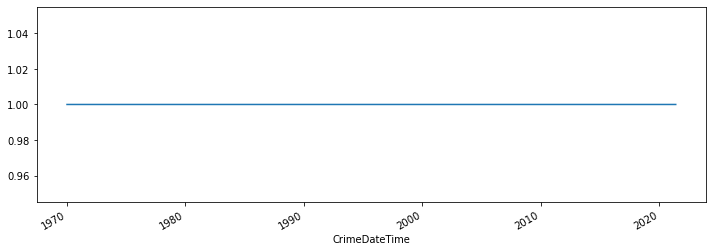
Q: What went wrong? What are we looking at?#
Time Series Frequencies & Resampling#
## Resample to daily data ("D")
ts = ts.resample("D").sum()
ts
CrimeDateTime
1970-01-01 00:00:00+00:00 11
1970-01-02 00:00:00+00:00 0
1970-01-03 00:00:00+00:00 0
1970-01-04 00:00:00+00:00 0
1970-01-05 00:00:00+00:00 0
..
2021-05-18 00:00:00+00:00 3
2021-05-19 00:00:00+00:00 0
2021-05-20 00:00:00+00:00 3
2021-05-21 00:00:00+00:00 2
2021-05-22 00:00:00+00:00 1
Freq: D, Name: SHOOTING, Length: 18770, dtype: int64
## Check the index, whats different?
ts.index
DatetimeIndex(['1970-01-01 00:00:00+00:00', '1970-01-02 00:00:00+00:00',
'1970-01-03 00:00:00+00:00', '1970-01-04 00:00:00+00:00',
'1970-01-05 00:00:00+00:00', '1970-01-06 00:00:00+00:00',
'1970-01-07 00:00:00+00:00', '1970-01-08 00:00:00+00:00',
'1970-01-09 00:00:00+00:00', '1970-01-10 00:00:00+00:00',
...
'2021-05-13 00:00:00+00:00', '2021-05-14 00:00:00+00:00',
'2021-05-15 00:00:00+00:00', '2021-05-16 00:00:00+00:00',
'2021-05-17 00:00:00+00:00', '2021-05-18 00:00:00+00:00',
'2021-05-19 00:00:00+00:00', '2021-05-20 00:00:00+00:00',
'2021-05-21 00:00:00+00:00', '2021-05-22 00:00:00+00:00'],
dtype='datetime64[ns, UTC]', name='CrimeDateTime', length=18770, freq='D')
## PLot the time series
ts.plot()
<AxesSubplot:xlabel='CrimeDateTime'>
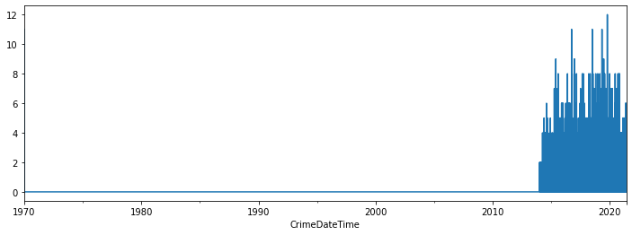
Q: It worked! But whats the issue?#
Slicing With Time Series#
Make sure your index is sorted first’
Use
.locwith dates as strings for slicing
## Slice out dates prior to rise in daily counts
ts.sort_index(inplace=True)
ts[2015:]
CrimeDateTime
1975-07-09 00:00:00+00:00 0
1975-07-10 00:00:00+00:00 0
1975-07-11 00:00:00+00:00 0
1975-07-12 00:00:00+00:00 0
1975-07-13 00:00:00+00:00 0
..
2021-05-18 00:00:00+00:00 3
2021-05-19 00:00:00+00:00 0
2021-05-20 00:00:00+00:00 3
2021-05-21 00:00:00+00:00 2
2021-05-22 00:00:00+00:00 1
Freq: D, Name: SHOOTING, Length: 16755, dtype: int64
ts.loc["2015-":]
CrimeDateTime
2015-06-01 00:00:00+00:00 1
2015-06-02 00:00:00+00:00 3
2015-06-03 00:00:00+00:00 0
2015-06-04 00:00:00+00:00 0
2015-06-05 00:00:00+00:00 0
..
2021-05-18 00:00:00+00:00 3
2021-05-19 00:00:00+00:00 0
2021-05-20 00:00:00+00:00 3
2021-05-21 00:00:00+00:00 2
2021-05-22 00:00:00+00:00 1
Freq: D, Name: SHOOTING, Length: 2183, dtype: int64
ts = ts.loc["2015":]
ts.plot()
<AxesSubplot:xlabel='CrimeDateTime'>
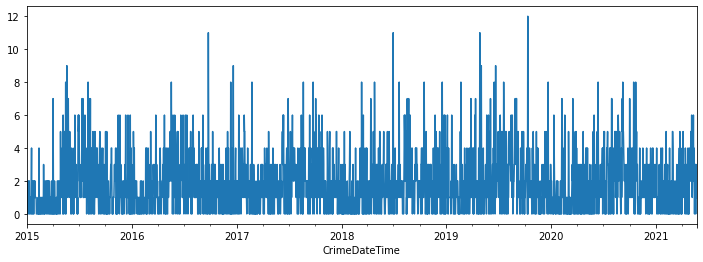
Much better! sort of… but whats the issue now?#
Time series Frequencies#
We want the daily counts for our crimes.
In order to do so we have to resample the ts using the correct frequency alias.
For time series modeling, we will need our time series as a specific frequency without missing data.
Pandas Frequency Aliases#
https://pandas.pydata.org/pandas-docs/stable/user_guide/timeseries.html#timeseries-offset-aliases
Alias |
Description |
|---|---|
B |
business day frequency |
C |
custom business day frequency |
D |
calendar day frequency |
W |
weekly frequency |
M |
month end frequency |
SM |
semi-month end frequency (15th and end of month) |
BM |
business month end frequency |
CBM |
custom business month end frequency |
MS |
month start frequency |
SMS |
semi-month start frequency (1st and 15th) |
BMS |
business month start frequency |
CBMS |
custom business month start frequency |
Q |
quarter end frequency |
BQ |
business quarter end frequency |
QS |
quarter start frequency |
BQS |
business quarter start frequency |
A, Y |
year end frequency |
BA, BY |
business year end frequency |
AS, YS |
year start frequency |
BAS, BYS |
business year start frequency |
BH |
business hour frequency |
H |
hourly frequency |
T |
min minutely frequency |
S |
secondly frequency |
L |
ms milliseconds |
U |
us microseconds |
N |
nanoseconds |
Compare Resampled ts#
## Plot the same ts as different frequencies
## Specify freq codes daily, every 3 days, weekly, Monthly, Quarterly, yearly
freq_codes = ['D','3D','W','M','Q','A']
## select ts from CRIMES
ts = CRIMES['SHOOTING'].sort_index().loc['2015':]
## For each freq code
for freq in freq_codes:
## make a new figure, resample and plot
plt.figure()
ts.resample(freq).sum().plot(title=freq)
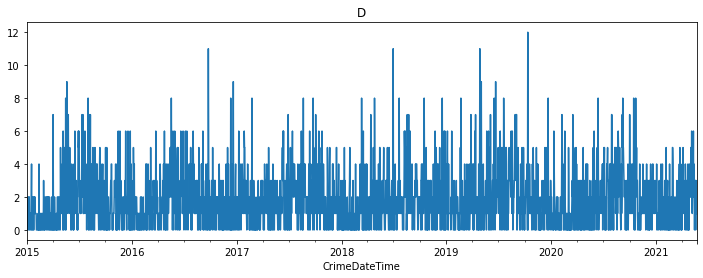
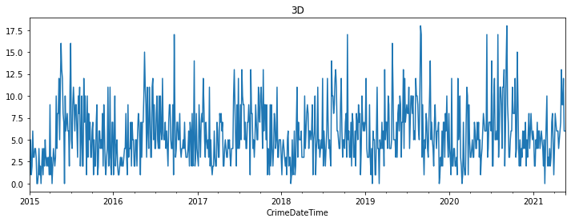
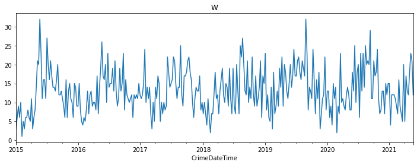
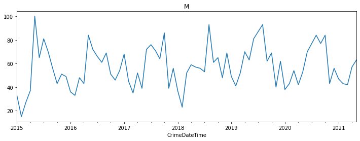
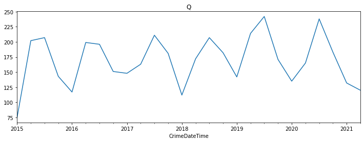
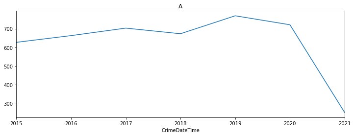
## Plot the same ts as different frequencies
## Specify freq codes daily, every 3 days, weekly, Monthly, Quarterly, yearly
freq_codes = ['D','3D','W','M','Q','A']
## select ts from CRIMES
ts = CRIMES['SHOOTING'].sort_index().loc['2015':]
## For each freq code
for freq in freq_codes:
## make a new figure, resample and plot
# plt.figure()
ts.resample(freq).sum().plot(title=freq)
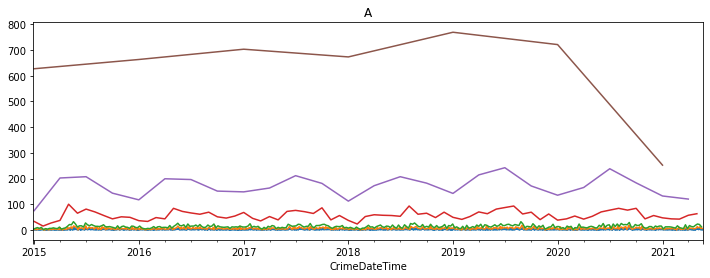
Visualize all CRIMES as “D” Freq#
Loop through all CRIMES, slice out 2015-Present, and resample as “D” - We can always downsample without issue, but upsampling is a problematic
Using Dictionaries for TIme Series preprocessing#
df
| Description | Total_Incidents | District | Neighborhood | |
|---|---|---|---|---|
| CrimeDateTime | ||||
| 2021-05-22 14:01:44+00:00 | HOMICIDE | 1 | NORTHWEST | HOWARD PARK |
| 2021-05-22 00:01:00+00:00 | AGG. ASSAULT | 1 | SOUTHWEST | ALLENDALE |
| 2021-05-22 18:11:00+00:00 | HOMICIDE | 1 | WESTERN | EVERGREEN LAWN |
| 2021-05-22 19:44:00+00:00 | COMMON ASSAULT | 1 | EASTERN | OLDTOWN |
| 2021-05-22 15:10:00+00:00 | COMMON ASSAULT | 1 | EASTERN | GAY STREET |
| ... | ... | ... | ... | ... |
| 1975-06-01 00:00:00+00:00 | RAPE | 1 | SOUTHWEST | UPLANDS |
| 1973-07-01 23:00:00+00:00 | RAPE | 1 | NORTHWEST | CENTRAL FOREST PARK |
| 1970-06-15 00:01:00+00:00 | RAPE | 1 | WESTERN | MONDAWMIN |
| 1969-07-20 21:00:00+00:00 | RAPE | 1 | NORTHERN | ROLAND PARK |
| 1963-10-30 00:00:00+00:00 | RAPE | 1 | NORTHWEST | HOWARD PARK |
336773 rows × 4 columns
## make a dict of all crime types' DataFrames
TS = {}
## For each crime type
for crime in crimes:
## Get the group df
group_df = df.groupby('Description').get_group(crime)['Total_Incidents'].rename(crime)
## Save the group_df into the CRIMES dict
TS[crime] =group_df.resample('D').sum().loc['2014':]
## Display the keys
TS.keys()
dict_keys(['HOMICIDE', 'AGG. ASSAULT', 'COMMON ASSAULT', 'LARCENY', 'AUTO THEFT', 'ROBBERY - CARJACKING', 'BURGLARY', 'LARCENY FROM AUTO', 'ROBBERY - COMMERCIAL', 'SHOOTING', 'ROBBERY - RESIDENCE', 'ROBBERY - STREET', 'ARSON', 'RAPE'])
## Check shooting
TS["SHOOTING"]
CrimeDateTime
2014-01-01 00:00:00+00:00 2
2014-01-02 00:00:00+00:00 0
2014-01-03 00:00:00+00:00 1
2014-01-04 00:00:00+00:00 0
2014-01-05 00:00:00+00:00 2
..
2021-05-18 00:00:00+00:00 3
2021-05-19 00:00:00+00:00 0
2021-05-20 00:00:00+00:00 3
2021-05-21 00:00:00+00:00 2
2021-05-22 00:00:00+00:00 1
Freq: D, Name: SHOOTING, Length: 2699, dtype: int64
Now that we have the same frequency for each crime series, make them into a dataframe#
## Concatenate all ts together into one ts_df
ts_df = pd.concat(TS,axis=1)
ts_df
| HOMICIDE | AGG. ASSAULT | COMMON ASSAULT | LARCENY | AUTO THEFT | ROBBERY - CARJACKING | BURGLARY | LARCENY FROM AUTO | ROBBERY - COMMERCIAL | SHOOTING | ROBBERY - RESIDENCE | ROBBERY - STREET | ARSON | RAPE | |
|---|---|---|---|---|---|---|---|---|---|---|---|---|---|---|
| CrimeDateTime | ||||||||||||||
| 2014-01-01 00:00:00+00:00 | 2 | 22 | 19 | 34 | 9 | NaN | 20 | 15 | 2 | 2 | 1.0 | 8.0 | NaN | 5.0 |
| 2014-01-02 00:00:00+00:00 | 3 | 6 | 23 | 26 | 7 | 1.0 | 28 | 10 | 1 | 0 | 1.0 | 4.0 | NaN | 0.0 |
| 2014-01-03 00:00:00+00:00 | 1 | 11 | 17 | 16 | 3 | 0.0 | 13 | 6 | 1 | 1 | 1.0 | 2.0 | NaN | 0.0 |
| 2014-01-04 00:00:00+00:00 | 0 | 14 | 23 | 23 | 14 | 0.0 | 20 | 15 | 1 | 0 | 1.0 | 7.0 | NaN | 0.0 |
| 2014-01-05 00:00:00+00:00 | 0 | 9 | 22 | 19 | 11 | 2.0 | 14 | 13 | 0 | 2 | 1.0 | 10.0 | NaN | 1.0 |
| ... | ... | ... | ... | ... | ... | ... | ... | ... | ... | ... | ... | ... | ... | ... |
| 2021-05-18 00:00:00+00:00 | 0 | 9 | 12 | 19 | 8 | 0.0 | 9 | 5 | 1 | 3 | 2.0 | 5.0 | 2.0 | NaN |
| 2021-05-19 00:00:00+00:00 | 1 | 7 | 24 | 12 | 10 | 1.0 | 6 | 5 | 0 | 0 | 2.0 | 6.0 | NaN | NaN |
| 2021-05-20 00:00:00+00:00 | 0 | 15 | 15 | 14 | 5 | 3.0 | 10 | 6 | 2 | 3 | 1.0 | 10.0 | NaN | NaN |
| 2021-05-21 00:00:00+00:00 | 2 | 11 | 19 | 6 | 9 | 1.0 | 3 | 4 | 1 | 2 | 1.0 | 9.0 | NaN | NaN |
| 2021-05-22 00:00:00+00:00 | 2 | 11 | 14 | 5 | 5 | 1.0 | 3 | 1 | 1 | 1 | NaN | NaN | NaN | NaN |
2699 rows × 14 columns
Visualize all ts with the differnet requency codes#
## Plot the same ts as different frequencies
ts_df.plot()
<AxesSubplot:xlabel='CrimeDateTime'>
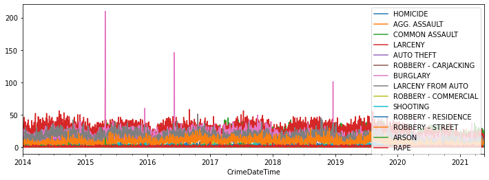
Dealing with Null Values#
## Check For Null Values
ts_df.isna().sum()
HOMICIDE 0
AGG. ASSAULT 0
COMMON ASSAULT 0
LARCENY 0
AUTO THEFT 0
ROBBERY - CARJACKING 1
BURGLARY 0
LARCENY FROM AUTO 0
ROBBERY - COMMERCIAL 0
SHOOTING 0
ROBBERY - RESIDENCE 1
ROBBERY - STREET 1
ARSON 9
RAPE 6
dtype: int64
# save a T/F index for if a row has any nulls
nulls = ts_df.isna().any(axis=1)
# check out the null rows
ts_df[nulls]
| HOMICIDE | AGG. ASSAULT | COMMON ASSAULT | LARCENY | AUTO THEFT | ROBBERY - CARJACKING | BURGLARY | LARCENY FROM AUTO | ROBBERY - COMMERCIAL | SHOOTING | ROBBERY - RESIDENCE | ROBBERY - STREET | ARSON | RAPE | |
|---|---|---|---|---|---|---|---|---|---|---|---|---|---|---|
| CrimeDateTime | ||||||||||||||
| 2014-01-01 00:00:00+00:00 | 2 | 22 | 19 | 34 | 9 | NaN | 20 | 15 | 2 | 2 | 1.0 | 8.0 | NaN | 5.0 |
| 2014-01-02 00:00:00+00:00 | 3 | 6 | 23 | 26 | 7 | 1.0 | 28 | 10 | 1 | 0 | 1.0 | 4.0 | NaN | 0.0 |
| 2014-01-03 00:00:00+00:00 | 1 | 11 | 17 | 16 | 3 | 0.0 | 13 | 6 | 1 | 1 | 1.0 | 2.0 | NaN | 0.0 |
| 2014-01-04 00:00:00+00:00 | 0 | 14 | 23 | 23 | 14 | 0.0 | 20 | 15 | 1 | 0 | 1.0 | 7.0 | NaN | 0.0 |
| 2014-01-05 00:00:00+00:00 | 0 | 9 | 22 | 19 | 11 | 2.0 | 14 | 13 | 0 | 2 | 1.0 | 10.0 | NaN | 1.0 |
| 2021-05-17 00:00:00+00:00 | 3 | 14 | 25 | 12 | 5 | 2.0 | 11 | 12 | 1 | 3 | 0.0 | 6.0 | 0.0 | NaN |
| 2021-05-18 00:00:00+00:00 | 0 | 9 | 12 | 19 | 8 | 0.0 | 9 | 5 | 1 | 3 | 2.0 | 5.0 | 2.0 | NaN |
| 2021-05-19 00:00:00+00:00 | 1 | 7 | 24 | 12 | 10 | 1.0 | 6 | 5 | 0 | 0 | 2.0 | 6.0 | NaN | NaN |
| 2021-05-20 00:00:00+00:00 | 0 | 15 | 15 | 14 | 5 | 3.0 | 10 | 6 | 2 | 3 | 1.0 | 10.0 | NaN | NaN |
| 2021-05-21 00:00:00+00:00 | 2 | 11 | 19 | 6 | 9 | 1.0 | 3 | 4 | 1 | 2 | 1.0 | 9.0 | NaN | NaN |
| 2021-05-22 00:00:00+00:00 | 2 | 11 | 14 | 5 | 5 | 1.0 | 3 | 1 | 1 | 1 | NaN | NaN | NaN | NaN |
Q: what do we notice about our null values? Where are they?#
We have several options for filling in null values for time series, based on what would be best for our data.
## FFill null values with the next non-null value
ts_df.bfill()[nulls]
| HOMICIDE | AGG. ASSAULT | COMMON ASSAULT | LARCENY | AUTO THEFT | ROBBERY - CARJACKING | BURGLARY | LARCENY FROM AUTO | ROBBERY - COMMERCIAL | SHOOTING | ROBBERY - RESIDENCE | ROBBERY - STREET | ARSON | RAPE | |
|---|---|---|---|---|---|---|---|---|---|---|---|---|---|---|
| CrimeDateTime | ||||||||||||||
| 2014-01-01 00:00:00+00:00 | 2 | 22 | 19 | 34 | 9 | 1.0 | 20 | 15 | 2 | 2 | 1.0 | 8.0 | 2.0 | 5.0 |
| 2014-01-02 00:00:00+00:00 | 3 | 6 | 23 | 26 | 7 | 1.0 | 28 | 10 | 1 | 0 | 1.0 | 4.0 | 2.0 | 0.0 |
| 2014-01-03 00:00:00+00:00 | 1 | 11 | 17 | 16 | 3 | 0.0 | 13 | 6 | 1 | 1 | 1.0 | 2.0 | 2.0 | 0.0 |
| 2014-01-04 00:00:00+00:00 | 0 | 14 | 23 | 23 | 14 | 0.0 | 20 | 15 | 1 | 0 | 1.0 | 7.0 | 2.0 | 0.0 |
| 2014-01-05 00:00:00+00:00 | 0 | 9 | 22 | 19 | 11 | 2.0 | 14 | 13 | 0 | 2 | 1.0 | 10.0 | 2.0 | 1.0 |
| 2021-05-17 00:00:00+00:00 | 3 | 14 | 25 | 12 | 5 | 2.0 | 11 | 12 | 1 | 3 | 0.0 | 6.0 | 0.0 | NaN |
| 2021-05-18 00:00:00+00:00 | 0 | 9 | 12 | 19 | 8 | 0.0 | 9 | 5 | 1 | 3 | 2.0 | 5.0 | 2.0 | NaN |
| 2021-05-19 00:00:00+00:00 | 1 | 7 | 24 | 12 | 10 | 1.0 | 6 | 5 | 0 | 0 | 2.0 | 6.0 | NaN | NaN |
| 2021-05-20 00:00:00+00:00 | 0 | 15 | 15 | 14 | 5 | 3.0 | 10 | 6 | 2 | 3 | 1.0 | 10.0 | NaN | NaN |
| 2021-05-21 00:00:00+00:00 | 2 | 11 | 19 | 6 | 9 | 1.0 | 3 | 4 | 1 | 2 | 1.0 | 9.0 | NaN | NaN |
| 2021-05-22 00:00:00+00:00 | 2 | 11 | 14 | 5 | 5 | 1.0 | 3 | 1 | 1 | 1 | NaN | NaN | NaN | NaN |
## FFill null values with the previous non-null value
ts_df.ffill()[nulls]
| HOMICIDE | AGG. ASSAULT | COMMON ASSAULT | LARCENY | AUTO THEFT | ROBBERY - CARJACKING | BURGLARY | LARCENY FROM AUTO | ROBBERY - COMMERCIAL | SHOOTING | ROBBERY - RESIDENCE | ROBBERY - STREET | ARSON | RAPE | |
|---|---|---|---|---|---|---|---|---|---|---|---|---|---|---|
| CrimeDateTime | ||||||||||||||
| 2014-01-01 00:00:00+00:00 | 2 | 22 | 19 | 34 | 9 | NaN | 20 | 15 | 2 | 2 | 1.0 | 8.0 | NaN | 5.0 |
| 2014-01-02 00:00:00+00:00 | 3 | 6 | 23 | 26 | 7 | 1.0 | 28 | 10 | 1 | 0 | 1.0 | 4.0 | NaN | 0.0 |
| 2014-01-03 00:00:00+00:00 | 1 | 11 | 17 | 16 | 3 | 0.0 | 13 | 6 | 1 | 1 | 1.0 | 2.0 | NaN | 0.0 |
| 2014-01-04 00:00:00+00:00 | 0 | 14 | 23 | 23 | 14 | 0.0 | 20 | 15 | 1 | 0 | 1.0 | 7.0 | NaN | 0.0 |
| 2014-01-05 00:00:00+00:00 | 0 | 9 | 22 | 19 | 11 | 2.0 | 14 | 13 | 0 | 2 | 1.0 | 10.0 | NaN | 1.0 |
| 2021-05-17 00:00:00+00:00 | 3 | 14 | 25 | 12 | 5 | 2.0 | 11 | 12 | 1 | 3 | 0.0 | 6.0 | 0.0 | 1.0 |
| 2021-05-18 00:00:00+00:00 | 0 | 9 | 12 | 19 | 8 | 0.0 | 9 | 5 | 1 | 3 | 2.0 | 5.0 | 2.0 | 1.0 |
| 2021-05-19 00:00:00+00:00 | 1 | 7 | 24 | 12 | 10 | 1.0 | 6 | 5 | 0 | 0 | 2.0 | 6.0 | 2.0 | 1.0 |
| 2021-05-20 00:00:00+00:00 | 0 | 15 | 15 | 14 | 5 | 3.0 | 10 | 6 | 2 | 3 | 1.0 | 10.0 | 2.0 | 1.0 |
| 2021-05-21 00:00:00+00:00 | 2 | 11 | 19 | 6 | 9 | 1.0 | 3 | 4 | 1 | 2 | 1.0 | 9.0 | 2.0 | 1.0 |
| 2021-05-22 00:00:00+00:00 | 2 | 11 | 14 | 5 | 5 | 1.0 | 3 | 1 | 1 | 1 | 1.0 | 9.0 | 2.0 | 1.0 |
## We have crime counts, so it makes sense to fill with 0
ts_df.fillna(0,inplace=True)
## Save df to csv for time series modeling next class
# ts_df.to_csv('baltimore_crime_counts_2021.csv')
Time Series Trends#
Types of Trends#

Stationarity#